Calendrier Technologie 5ème - 2025/2026
| Date | Cours | Date | Cours |
|---|
Découvrir le vélo : objet technique ou naturel ?
Thème : Objet et systèmes techniques
Compétence visée : Identifier un objet technique et comprendre son usage
Objectifs d’apprentissage :-
Ce que les élèves vont apprendre (connaissances) :
- Différence objet naturel / objet technique.
- Notion de besoin et usage d’un objet.
- Exemples d’objets techniques du quotidien.
-
Ce qu’ils vont apprendre à faire (capacités) :
- Identifier un objet technique et justifier son caractère technique.
- Associer un objet à un besoin.
- Produire un court document numérique structuré avec images légendées et réponses.
-
Production attendue (à rendre sur l'espace d'échange) :
- 5e_S2_G1.odt (pour le groupe 1, par exemple)
- 3 images (vélo + 2 objets au choix) avec légende
- Réponses aux questions guidées (voir déroulé)
- 3 exemples d’objets techniques du quotidien (+ leur besoin associé) Les documents seront à rendre et seront possiblement noté (ou compté dans la note de participation).
1. Mise en route – consigne
Avant de comprendre comment un objet fonctionne, il faut savoir ce qu’est un objet technique. On va apprendre à faire la différence entre ce que la nature nous donne, ce que la nature crée seule (objets naturels) et ce que l’humain fabrique (objets techniques) pour se simplifier la vie.
On va donc comparer des objets naturels et des objets techniques pour comprendre ce qui les distingue, en prennant comme objet technique d'étude, le vélo.
Cette distinction est essentielle pour tout le reste de l’année.
« Crée un document d’une page : noms / prénoms, titre de la séance, images légendées, réponses aux questions, 3 exemples d’objets techniques + besoins. »
2. Mini-rappel guidé
- “Selon vous, qu’est-ce qu’un objet technique ?”
- “Quel besoin le vélo satisfait-il ?”
3. Recherche et collecte d’images
- Cherchez 1 photo de vélo + 2 photos d’objets techniques
- Insèrez les images dans le document et ajoutent une légende sous chaque image
4. Réponses guidées
-
Dans votre document, répondez aux questions suivantes :
- Q1 : Explique en 1 phrase la différence entre objet naturel et objet technique ?
- Q2 : Quel est le besoin principal auquel répond le vélo ?
- Q3 : Cite 2 usages possibles du vélo
- Q4 : Choisissez un objet technique (hors vélo) et associez-lui le besoin qu’il satisfait
5. Exemples personnels
Dans votre document : Listez 3 objets techniques de votre quotidien et indiquez, pour chacun, le besoin associé.
Déposez votre document, correctement nommé, dans l’espace d’échange.
Question : les objets naturel ne sont ils pas des objets technique, que la nature a mis au point pour faciliter la vie ?
Réponse : Non, les objets naturels ne sont pas considérés comme des objets techniques, même si la nature “fabrique” elle aussi des choses complexes et ingénieuses.
Différence essentielle :| Objet naturel | Objet technique | |
| Origine | Créé par la nature sans intervention humaine | Conçu et fabriqué par l'être humain |
| But | Résulte de processus biologiques ou physiques (sans intention) | Résulte d'une intention pour répondre à un besoin |
| Exemples | Arbre, coquillage, os, miel | Chaise, vélo, montre, ordinateur |
-
La clé de la distinction, c'est l'intention de conception :
- La nature n'a pas d'intention consciente : elle ne "veut" pas faciliter la vie, elle évolue par sélection naturelle
- L'humain, lui, invente des objets en pensant à une fonction et en choisissant des matériaux pour cela.
-
Exemple :
- Une fleur attire les insectes pour être pollinisée : c'est une adaptation naturelle, pas une invention.
- Une lampe attire les insectes aussi (par sa lumière), mais elle a été conçue par l’humain pour éclairer. Donc seule la lampe est un objet technique.
Conclusion :
Un objet technique est fabriqué par l’être humain pour répondre à un besoin.
Un objet naturel existe sans intervention humaine, même s’il peut inspirer des inventions (c’est ce qu’on appelle le biomimétisme).
Séance 11 : Observer et démonter une lampe de bureau
Thème : Structure, fonctionnement, comportement des objets techniques
Compétence visée : Identifier les composants internes d’un objet technique et comprendre leur rôle
Objectifs d’apprentissage-
Ce que les élèves vont apprendre (connaissances) :
- identifier les éléments visibles et internes d’une lampe
- comprendre le cheminement de l’énergie (de la prise électrique à la lumière)
- nommer les éléments essentiels (alimentation, interrupteur, LED, support…)
-
Ce qu’ils vont apprendre à faire (capacités) :
- observer et analyser un objet réel ou une photo détaillée
- créer un document numérique annoté (avec flèches, zones de texte, légendes)
- enregistrer et rendre un travail clair à la fin de la séance
1. Introduction
Avant d’apprendre à schématiser ou à programmer un objet, il faut comprendre comment il est fait.
Cette séance permet aux élèves de voir un objet technique courant — la lampe — pour repérer ses composants, comprendre leur rôle, et faire le lien entre énergie, information et action.
2. Observation guidée
Compléter l'image suivante avec des annotations : Lampe de bureau avec les mots suivants :- Bras
- Prise
- Ampoule
- Socle / Base
- Transformateur
- Fil
- Interrupteur
- Tête
3. Réalisation du document
- Vous allez :
- télécharger l'image précédente et l'enregistrer sur votre ordinateur
- l'ouvrir avec "paint"
- annoter l'image (il y a un outil de texte dans paint)
- enregistrer cette image avec le nom suivant : "lampe_bureau_annote" au format .jpg ou .png
- créer un document texte (LibreOffice Writer) nommé : 5e_S11_G1.odt (pour le groupe 1, par exemple)
- Ce document doit comporter obligatoirement :
- Les noms et prénoms des élèves du groupe
- Le titre de la séance en cours
- insérer l'image annoté de la lampe de bureau que vous venez de faire
- trouver, sur le web, une image de transformateur de lampe de bureau
- enregistrer l'image, l'insérer dans le document texte et la légender
- sous l'image, créer un tableau avec les colonnes suivantes :
- Elément
- Rôle
- Type d'énergie Par exemple : | Interrupteur | Permet d'allumer ou d'éteindre la lampe | Énergie électrique |
2 types d'énergie : électrique ou mécanique - Ajouter la phrase suivante à la fin de votre document : Une lampe fonctionne grâce à des composants qui permettent de transformer l’énergie électrique en lumière.
4. À copier à la main
Aujourd’hui, j’ai appris à identifier les composants d'une lampe en observant et analysant cette lampe pour comprendre comment elle est constituée.
J’ai identifié ses composants principaux : alimentation, interrupteur, source lumineuse, support...
J’ai compris que la lampe transforme l’énergie électrique en lumière grâce à des éléments comme l’interrupteur, l'ampoule et les fils de connexion.
Même sans démonter la lampe, il est possible de trouver des schémas, des dessins, permettant d'analyser sa structure et comprendre son fonctionnement.
Lire un schéma fonctionnel : fonctionnement d’une lampe
Thème : Structure, fonctionnement, comportement des objets techniques
Compétence visée : Lire et réaliser un schéma fonctionnel d’un objet technique
Objectifs d’apprentissage-
Ce que les élèves vont apprendre (connaissances) :
- reconnaître un schéma fonctionnel et comprendre son utilité
- relier les fonctions du schéma aux parties réelles de la lampe
- repérer les liens d’énergie et d’information dans un objet simple
-
Ce qu’ils vont apprendre à faire (capacités) :
- lire un schéma fonctionnel sur ordinateur
- compléter un document numérique en reliant les éléments du schéma à des photos de la lampe
- rédiger une courte explication du fonctionnement global
1. Introduction
Pour comprendre comment un objet fonctionne, il ne suffit pas de savoir à quoi il sert : il faut savoir comment les différentes parties agissent ensemble.
Le schéma fonctionnel est un outil qui sert à représenter le fonctionnement global d’un objet, sans entrer dans les détails électriques ou mécaniques.
Aujourd’hui, les élèves apprennent à lire et interpréter celui d’une lampe connectée.
2. Lecture du schéma
Lampe “classique” avec interrupteur (secteur)
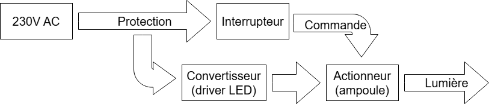- Si l’ampoule est à filament, on n’a pas de convertisseur : 230 V → ampoule → lumière
- Si c’est une LED, le driver convertit 230 V AC en courant continu adapté à la LED
-
Vue d’ensemble (chaînes)
- Chaîne d’énergie : Réseau 230 V → (protection) → convertisseur (si LED : driver / si ampoule à filament : rien) → actionneur (ampoule) → lumière
- Chaîne d’information : Utilisateur → interface (interrupteur) → commande (O/I) → actionneur (allume/éteint)
-
Étapes (simples et concrètes)
- Source d’énergie : le réseau 230 V arrive par la prise.
- Protection (souvent intégrée) : fusible/isolement, évite les dangers.
- Interface utilisateur : l’interrupteur (O/I) envoie l’ordre.
- Commande : l’ordre ouvre/ferme le circuit d’énergie.
- Conversion (si LED) : le driver transforme l’AC en DC stable.
- Actionneur : l’ampoule convertit l’énergie électrique en lumière.
- Sortie : la lumière éclaire le milieu.
| Fonction | Élément réel |
| Source d’énergie | Prise secteur 230 V |
| Protection | Corps isolant, fusible (parfois) |
| Interface | Interrupteur à bascule ou à cordelette |
| Commande | Fermeture/ouverture de circuit |
| Convertisseur | Driver LED (si ampoule LED) |
| Actionneur | Ampoule (LED, filament, fluocompacte) |
| Sortie | Lumière émise |
3. Activité sur ordinateur
-
Créez un document numérique (LibreOffice Writer) nommé : 5e_S12_G1.odt (pour le groupe 1, par exemple)
- Copiez l'image du schéma fonctionnel sur votre ordinateur
- Trouvez des images pour chaque élément de la lampe de bureau
- Editez le schéma avec paint pour mettre l'image de chaque élément sur votre schéma fonctionnel
- Enregistrez votre schéma sur l'ordianteur
- Dans votre document LibreOffice Writer, coller le schéma que vous venez d'éditer
- Ecrivez 4 / 5 lignes d'explication
- Enregistrez et déposez votre document, correctement nommé, dans l’espace d’échange.
4. À copier à la main
Aujourd’hui, j’ai appris à lire un schéma fonctionnel.
Ce schéma montre les grandes fonctions d’un objet sans représenter les détails.
Dans une lampe connectée, l’énergie vient d’une source, passe par un convertisseur (ampoule LED) et l’allumage est commandé par un capteur ou un interrupteur.
Le schéma fonctionnel permet donc de comprendre le fonctionnement global d’un objet technique.
Séance 13 – La chaîne d’énergie d’une lampe connectée
Thème : Structure, fonctionnement, comportement d’un objet technique
Compétence visée : Identifier les transformations d’énergie et les éléments de la chaîne d’énergie
Objectifs d’apprentissage-
Ce que les élèves vont apprendre (connaissances) :
- repérer les étapes de la chaîne d’énergie dans une lampe
- reconnaître les éléments : source, transformation, distribution, action
- comprendre le rôle de chaque élément
-
Ce qu’ils vont apprendre à faire (capacités) :
- une recherche en ligne sur la lampe connectée
- compléter un schéma numérique de la chaîne d’énergie
- créer un document clair à rendre à la fin du cours
1. Introduction
Pour qu’un objet fonctionne, il doit recevoir de l’énergie, la transformer, puis l'utiliser pour agir.
Une lampe connectée, par exemple, transforme l’énergie électrique en lumière.
Comprendre cette chaîne d’énergie aide les élèves à voir comment circule l’énergie dans tout objet technique.
2. Recherche sur internet
-
Créez un document numérique (LibreOffice Writer) nommé : 5e_S13_G1.odt (pour le groupe 1, par exemple)
- Trouvez une image claire d'une lampe connectée et observez ses composants
- Insérez l'image que vous avez trouvé, dans le document Writer
3. Qu’est-ce que la chaîne d’énergie ?
La chaîne d’énergie décrit le chemin que suit l’énergie à l’intérieur d’un objet technique, depuis sa source jusqu’à l’action finale.
Elle sert à comprendre comment un objet fonctionne grâce à l’énergie qu’il reçoit.
-
On y trouve quatre grandes étapes (toujours dans le même ordre) :
- Source d’énergie → d’où vient l’énergie (pile, batterie, prise, vent, soleil…)
- Transformation → l’énergie change de forme (ex. électrique → lumineuse)
- Distribution → l’énergie circule vers les bonnes parties (fils, interrupteurs, circuits)
- Action → l’objet agit (éclaire, chauffe, bouge…)
En résumé :
La chaîne d’énergie montre comment l’énergie entre, circule, se transforme et sort d’un objet pour lui permettre de fonctionner.
4. Compléter le tableau
Reprenez votre document Writer, copiez et complétez le tableau suivant en vous aidant de l’image de la lampe connectée que vous avez trouvée.
| Étape de la chaîne d’énergie | Nom de la partie du système | Type d’énergie (électrique/lumineuse) | Rôle |
| Source d’énergie | Prise électrique ou batterie rechargeable | ||
| Transformation | Carte électronique + LED | ||
| Distribution | Câbles, interrupteur, circuit de commande | ||
| Action | Ampoule / LED |
-
Toujours dans votre document Writer :
- Décrire, en quelques mots, le fonctionnement global de la lampe connectée (entrée -> transformation -> sortie).
- Enregistrez et déposez votre document, correctement nommé, dans l’espace d’échange.
5. À copier à la main
Aujourd’hui, j’ai appris qu’une chaîne d’énergie montre comment l’énergie circule dans un objet.
Dans une lampe connectée, l’énergie électrique est transformée en lumière par les LED, et commandée par un circuit électronique.
J’ai appris à repérer les étapes de la chaîne d’énergie : source, transformation, distribution, action.
Séance 14 : Chaîne d’information : capteurs et commande
Thème : Structure, fonctionnement et comportement d’un objet technique
Compétence visée : Identifier les capteurs, les informations qu’ils recueillent et comprendre comment une commande agit sur un système
Objectifs d’apprentissage-
Ce que les élèves vont apprendre (connaissances) :
- comprendre le rôle d’un capteur et d’un actionneur dans un objet
- identifier les étapes de la chaîne d’information (acquérir → traiter → communiquer)
- faire un test simple sur micro:bit pour observer une information et une réaction
-
Ce qu’ils vont apprendre à faire (capacités) :
- utiliser le capteur de lumière intégré au micro:bit
- programmer une réaction automatique (LED qui s’allume quand il fait sombre)
- créer un petit document illustré avec le schéma de la chaîne d’information et une capture de code
1. Introduction
Pour qu’un objet “intelligent” fonctionne (comme une lampe qui s’allume automatiquement quand il fait sombre ou quand on bouge), il faut qu’il perçoive une information grâce à un capteur, qu’il traite cette information, puis qu’il agisse via une commande.
Cette séance te fera découvrir comment une lampe connectée “comprend” son environnement à l’aide de capteurs simples.
2. Qu’est-ce qu’une chaîne d’information ?
Une chaîne d’information décrit comment un objet technique “intelligent” reçoit, traite et transmet des informations pour fonctionner.
C’est un ensemble d’étapes logiques qui permettent à l’objet de réagir à ce qu’il perçoit.
-
En version simple ça donne :
- Le capteur perçoit
- le programme décide
- l’actionneur agit
| Étape | Rôle | Exemple dans la lampe connectée |
| 1. Acquérir l’information | Le capteur mesure une donnée (lumière, température, mouvement, etc.). | Le capteur de lumière détecte s’il fait sombre. |
| 2. Traiter l’information | Le programme (microcontrôleur) analyse la donnée et prend une décision. | Le micro:bit compare la valeur mesurée avec un seuil (ex. < 100). |
| 3. Communiquer / agir | L’objet envoie un ordre ou déclenche une action. | Il allume la LED si la pièce est sombre. |
-
Dans un robinet automatique :
- Capteur → détecte les mains
- Programme → décide d’ouvrir
- Actionneur → ouvre l’électrovanne pour laisser passer l’eau
-
Dans un ascenseur :
- Capteur → bouton d’appel
- Programme → décide d’arrêter l’ascenseur à ton étage
- Actionneur → moteur et porte s’activent
La chaîne d’information sert à faire le lien entre le monde réel et le fonctionnement automatique d’un objet technique.
Elle fonctionne toujours en trois étapes : acquérir → traiter → communiquer/agir.
3. Découverte sur ordinateur
- Ouvrir makecode.microbit.org
- créez un nouveau projet “Lampe automatique” Nous allons créer un programme qui allume une LED quand il fait sombre
- Enlevez le bloc "au démarrage" et gardez "toujours"
- Dans "logique", sélectionnez le bloc "si ... alors sinon"
- Glissez le dans le bloc "toujours"
- Toujours dans "logique", sélectionnez dans l'onglet comparaison, le signe "<"
- Remplacer le "Vrai" de votre "Si ... Alors Sinon" par le bloc de comparaison "<" La carte Micro:Bit utilise les led comme capteur de lumière
- Dans "entrée", sélectionnez "niveau d'intensité lumineuse"
- Glissez "niveau d'intensité lumineuse" dans la partie gauche du signe "<"
- Modifier la partie droite avec la valeur 100
- Dans l'onglet "base", sélectionnez "montrer LEDs" et glissez le dans la partie "SI" de votre "Si ... Alors Sinon"
- Mettez toutes les cases de "montrer LEDs" en blanc (cas ou les LEDs sont allumées)
- Dans l'onglet "base", sélectionnez "montrer LEDs" et glissez le dans la partie "SINON" de votre "Si ... Alors Sinon"
- Ne mettez pas les cases en blanc (cas ou les LEDs sont éteintes)
- Branchez votre carte Micro:Bit à l'ordinateur via le cable USB
- En bas a gauche de votre écran, cliquez sur "Télécharger" pour envoyer le programme à la carte Micro:Bit
- Attendez la fin du transfert
- Cachez les LEDs de votre carte Micro:Bit et observez le résultat
- Si les LEDs sont allumées en permanence, prenez le flash de votre téléphone et allumez le en direction des LEDs
4. Activité guidée
-
Créez un document numérique (LibreOffice Writer) nommé : 5e_S14_G1.odt (pour le groupe 1, par exemple)
- Prenez un screen de votre code et insérez le dans votre document Writer
- Copiez le tableau suivant dans votre document
- Remplir le tableau avec les éléments suivant :
- programme
- LEDs
- capteur de lumière
| Capteur | Traitement | Actionneur |
- Enregistrez et déposez votre document, correctement nommé, dans l’espace d’échange.
5. À copier à la main
Aujourd’hui, j’ai appris qu’une chaîne d’information sert à acquérir, traiter et communiquer une donnée.
Un capteur mesure une information (comme la lumière).
Le programme décide de ce qu’il faut faire, et un actionneur exécute une action (ici, allumer les LED).
J’ai testé une lampe automatique programmée avec le micro:bit.
Séance 15 : Programmer une lampe automatique (détection de mouvement)
Thème : Structure, fonctionnement et comportement d’un objet technique
Compétence visée : Programmer le comportement d’un objet technique
Objectifs d’apprentissage-
Ce que les élèves vont apprendre (connaissances) :
- Le rôle du capteur (détecter un événement)
- Le rôle du microcontrôleur (traiter une information)
- Le rôle de l’actionneur (réaliser une action)
-
Ce qu’ils vont apprendre à faire (capacités) :
- Connecter un capteur de mouvement et une LED au micro:bit
- Créer un programme simple : si mouvement → allumer lampe
- Tester et corriger un programme
1. Introduction
Nous avons vu comment une lampe fonctionne, ses composants, sa chaîne d’énergie, sa chaine d'information.
Aujourd’hui, on va donner un comportement intelligent à une lampe : elle s’allumera toute seule quand elle détecte un mouvement.
Ce type de lampe existe déjà dans les maisons, les écoles, les parkings : c’est une économie d’énergie et un confort d’usage.
Les élèves vont donc approfondir le lien entre capteur, programme et actionneur — les trois éléments d’une chaîne d’information.
2. Observation guidée
Lampe automatique- Comment sait-elle qu’il y a quelqu’un ?
- Quel composant permet de détecter le mouvement ?
- Que fait la lampe quand elle détecte un mouvement ?
3. Activité pratique
- Vous allez reprendre le code de la dernière séance
- Avant de modifier le code, posez-vous les bonnes question :
- Comment ça fonctionne ?
- Pourquoi la lumière s'allume ?
- Pourquoi la lumière ne s'allume pas ?
- etc...
- Modifiez le code pour simuler une lampe automatique
- Créez un document Writer nommé : 5e_S15_G1.odt (pour le groupe 1, par exemple)
- Faites un screen de votre code et insérez le dans le document Writer
- Expliquez chaque ligne, chaque bloc de votre code (par exemple : "montrer LEDs" avec toutes les LEDs en blanc allume les LEDs de la carte Micro:Bit)
- Modifier à nouveau votre code, afin d'afficher ce que vous voulez, au lieu d'allumer toutes les LEDs.
- Faites un nouveau screen de votre code
- Insérez le dans votre document Writer
- Enregistrez et déposez votre document, correctement nommé, dans l’espace d’échange.
4. À copier à la main
Aujourd’hui, j’ai appris à programmer une lampe automatique en simulant un capteur de mouvement avec une carte programmable micro:bit.
Le capteur détecte la présence, le programme traite l’information, et la lampe s’allume.
J’ai compris le lien entre capteur, microcontrôleur et actionneur : c’est la chaîne d’information d’un objet connecté.
Séance 16 : Les objets connectés autour de nous
Thème : Structure, fonctionnement et comportement d’un objet technique
Compétence visée : Identifier les échanges d’énergie et d’informations dans un objet connecté
Objectifs d’apprentissage-
Ce que les élèves vont apprendre (connaissances) :
- reconnaître ce qu’est un objet connecté
- identifier ce qu’il fait et comment il communique
- comparer plusieurs objets connectés selon leur utilité
-
Ce qu’ils vont apprendre à faire (capacités) :
- chercher des informations fiables sur Internet
- construire un mini-diaporama clair (3 diapositives)
- présenter un exemple d’objet connecté de manière simple
1. Introduction
Cette séance permet de souffler un peu tout en ouvrant les horizons : on va explorer les objets connectés du quotidien, comprendre comment ils communiquent et à quoi ils servent.
L’activité repose sur la recherche, la découverte et la présentation, sans programmation ni câblage.
Quels objets connectés connaissez-vous ?
2. Choix de l’objet
Chaque binôme choisit un objet.
3. Recherche et création du diaporama
- Créez un document Présentation nommé : 5e_S16_G1.odp (pour le groupe 1, par exemple)
- Recherche des images libres de votre objet
- Diapo 1 : Nom de l’objet + photo + usage principal
- Diapo 2 : Quels sont ses capteurs et actionneurs ?
- Diapo 3 : Comment l’objet communique (Bluetooth, Wi-Fi…) et quel est son intérêt ? (Tu peux t’aider du site du fabricant, ou d’articles courts.)
- Faire une mise en forme claire
- Enregistrez et déposez votre document, correctement nommé, dans l’espace d’échange.
4. Présentation éclair
Quelques binômes présentent leur objet grâce à leur fichier "présentation"
5. À copier à la main
Aujourd’hui, j’ai découvert différents objets connectés du quotidien.
J’ai compris qu’ils échangent des informations grâce à des capteurs et des réseaux comme le Bluetooth ou le Wi-Fi.
J’ai appris à présenter un objet connecté et à expliquer comment il fonctionne.
Séance 17 : Dépanner une lampe : diagnostic d’un dysfonctionnement
Thème : Structure, fonctionnement et comportement d’un objet technique
Compétence visée : Identifier un dysfonctionnement et en rechercher la cause
Objectifs d’apprentissage-
Ce que les élèves vont apprendre (connaissances) :
- Identifier un dysfonctionnement dans un objet technique
- Chercher les causes possibles d’une panne
- Proposer une solution simple ou un constat logique
-
Ce qu’ils vont apprendre à faire (capacités) :
- Observer et décrire le comportement d’un objet en panne
- Suivre une démarche de diagnostic (observer → vérifier → conclure)
- Compléter une fiche de diagnostic numérique à rendre
1. Introduction
Dans la vie courante, un objet peut tomber en panne : il ne fonctionne plus, ou pas comme prévu.
Avant de le réparer ou de le remplacer, il faut comprendre pourquoi il ne marche plus.
Cette séance apprend aux élèves à observer, raisonner et diagnostiquer une panne simple, comme celle d’une lampe.
2. Observation
Vidéo Youtube : Comment réparer une lampe de chevet ?Vidéo de la chaine Electrotoile
Décrire le comportement de la lampe en panne.
3. Activité guidée sur ordinateur
-
Créez un document (LibreOffice Writer) nommé : 5e_S17_G1.odt (pour le groupe 1, par exemple)
- Décrire le problème observé dans la vidéo
- Lister les causes possibles du dysfonctionnement via le tableau suivant en le recopiant sur votre document
- Proposer des vérifications ou tests pour chaque cause
- Conclure sur la cause la plus probable et une solution simple
- Enregistrez et déposez votre document, correctement nommé, dans l’espace d’échange.
| Élément à vérifier | Hypothèse | Résultat de la vérification | Conclusion partielle |
| Source d’énergie (prise, pile) | |||
| Câble et interrupteur | |||
| Ampoule / LED |
4. Mise en commun
Quelques élèves proposes des causes et compare les solutions proposés
5. À copier à la main
Aujourd’hui, j’ai appris à diagnostiquer une panne sur un objet technique.
Pour cela, j’ai observé le comportement anormal d’une lampe et cherché les causes possibles du problème.
J’ai compris que dépanner, ce n’est pas réparer tout de suite, mais raisonner étape par étape pour trouver la cause du dysfonctionnement.
Séance 18 : Mini-Projet : créer une mini-lampe de bureau commandée
Thème : Structure, fonctionnement et comportement d’un objet technique
Compétence visée : Concevoir et réaliser une solution technique simple répondant à un besoin
Objectifs d’apprentissage-
Ce que les élèves vont apprendre (connaissances) :
- comprendre le rôle d’un capteur (entrée) et d’un actionneur (sortie)
- programmer une commande de lampe (bouton ou détection de lumière)
- organiser une chaîne d’information simple
-
Ce qu’ils vont apprendre à faire (capacités) :
- un petit programme micro:bit
- réaliser un circuit simple de commande de LED
- enregistrer et présenter ma solution technique sous forme de fiche
1. Introduction
Les élèves ont déjà compris comment fonctionne une lampe et comment l’énergie circule.
Aujourd’hui, ils vont passer à l’action : concevoir et programmer une mini-lampe de bureau contrôlée par un bouton ou un capteur.
Ce projet simple leur permet de relier concrètement l’énergie, l’information et le fonctionnement d’un objet technique — tout en découvrant la logique de commande automatique.
Rappel : qu’est-ce qu’un capteur ? un actionneur ?
Présentation du défi : “Créer une lampe qui s’allume quand on appuie sur un bouton.”
2. Mise en situation / Schéma
-
Allez sur le site suivant :
- Diagrams.net
- Faites un mini schéma avec : entrée (bouton) -> traitement (micro:bit) -> sortie (LEDs)
- Enregistrez votre schéma au format PNG
- Créez un document Writer nommé : 5e_S18_G1.odt (pour le groupe 1, par exemple)
- Insérez votre schéma dans le document Writer
3. Programmation sur MakeCode
-
Allez sur le site suivant :
- makecode.microbit.org
- Créez un nouveau projet “Mini-lampe de bureau”
- Programmez la carte micro:bit pour allumer les LEDs quand on appuie sur le bouton A
- Programmez la carte micro:bit pour éteindre les LEDs quand on appuie sur le bouton B
- Prenez un screen du code
- Insérez le screen dans le document Writer
- Enregistrez et déposez votre document, correctement nommé, dans l’espace d’échange.
4. Réalisation physique (si possible)
- Par groupe de 6 / 8 personnes (moins pour ceux qui ont finis en avance), prenez un kit
- Recherchez dans la documentation, le branchement d'une LED et son allumage via micro:bit
- Réalisez le montage sur la breadboard
- Testez votre programme sur la carte micro:bit
- Branchez la carte micro:bit dans la breadboard
- Testez le montage
5. À copier à la main
Aujourd’hui, j’ai appris à concevoir une lampe commandée avec un micro:bit.
J’ai compris le rôle du capteur (bouton), du traitement (programme) et de l’actionneur (LED).
J’ai créé un petit programme pour contrôler la lampe et vu comment la chaîne d’information fonctionne dans un objet technique.
J'ai réaliser mon premier montage électronique sur breadboard.
Séance 19 : Mini-projet : créer un objet connecté avec micro:bit
Thème : Structure, fonctionnement et comportement d’un objet technique
Compétence visée : Concevoir et réaliser une solution technique répondant à un besoin
Objectifs d’apprentissage-
Ce que les élèves vont apprendre (connaissances) :
- à relier capteur, traitement, actionneur dans un montage simple
- à programmer un comportement utile avec micro:bit
- à tester et valider un prototype fonctionnel
-
Ce qu’ils vont apprendre à faire (capacités) :
- un montage simple avec les composants du kit
- un programme MakeCode répondant à un besoin concret (ex. s’allumer, mesurer, avertir, etc.)
- à tester et corriger mon programme
1. Introduction
Tout au long du thème 2, les élèves ont vu comment une lampe connectée reçoit une information (capteur), la traite (programme), et agit sur un actionneur (LED).
Cette séance leur permet de réaliser eux-mêmes un petit objet utile sur le même principe, en utilisant la carte micro:bit.
Ils deviennent donc les “concepteurs” d’un objet technique.
2. Choix du projet + explication du montage
-
Chaque binôme choisit un mini-projet à réaliser parmi les propositions suivantes :
- Lampe automatique -> la lampe s'alume quand une autre carte micro:bit lui commande de s'allumer
- Thermomètre d'ambiance -> affiche une icone chaud / froid selon la température ambiante
- Alarme de mouvement -> affiche un message si on le bouge
- Message secret -> affiche un message quand on appuie sur A ou B
- Dé -> affiche un nombre aléatoire entre 1 et 6 quand on le secoue
- Dé graphique -> affiche une face de dé lorsqu'on le secoue
- Boule magique (8-ball) -> vous posez une question, vous secouez le micro:bit, la carte doit afficher un ✅ si la réponse est oui ou un ❌ si la réponse est non
- Boussole -> transformer votre micro:bit en boussole
- Niveau -> la carte affiche ✅ si elle est posé à plat, ❌ sinon
- Sonomètre -> affiche le niveau sonore d'ambiance
- Minuteur -> appuyez sur le bouton A pour ajouter 1 minutes, B pour enlever 1 minute, touchez le logo pour lancer le minuteur, à la fin du compte a rebours, joue un son pendant 2 secondes
- Chronomètre -> appuyez sur le bouton A pour lancer le chronomètre, B pour l'arrêter, le logo pour remettre à 0
-
Une fois que vous avez choisi votre projet :
- Créez un document (LibreOffice Writer) nommé : 5e_S19_G1.odt (pour le groupe 1, par exemple) Sur le site : Diagrams.net
- Réalisez le schéma fonctionnel
- Faites un screen et insérez le dans votre document Writer avec le titre "Schéma fonctionnel"
- Réalisez le schéma de la chaine d'énergie
- Faites un screen et insérez le dans votre document Writer avec le titre "Schéma chaine d'énergie"
- Réalisez le schéma de la chaine d'information
- Faites un screen et insérez le dans votre document Writer avec le titre "Schéma chaine d'information"
3. Réalisation pratique
-
Depuis le site : Makecode
- Codez votre projet
- Effectuez tous les tests qu'il faudra jusqu'à ce que votre projet fonctionne correctement
- Prenez un screen du code
- Insérez le screen dans le document Writer avec le titre "Code Makecode"
- Vous pouvez prendre des screens du simulateur pour prouver le bon fonctionnement de votre code
- Enregistrez et déposez votre document, correctement nommé, dans l’espace d’échange.
4. À copier à la main
Aujourd’hui, j’ai utilisé une carte micro:bit pour créer un mini-objet connecté.
J’ai appris à relier un capteur, un programme et un actionneur pour répondre à un besoin précis.
J'ai appris à concevoir et écrire un schéma fonctionnel, une chaîne d'énergie et une chaîne d'information.
Mon montage montre comment un objet technique perçoit, traite et agit selon les informations qu’il reçoit.
Diffusé le jour du test
Télécharger le QCMRepos avant les vacances
Séance 22 : Introduction à la démarche de projet (porte-clé connecté)
Thème : Création, conception, réalisation, innovations
Compétence visée : Comprendre et appliquer une démarche de projet technique / Identifier un besoin, une fonction, des contraintes
Objectifs d’apprentissage-
Ce que les élèves vont apprendre (connaissances) :
- Ce qu’est une démarche de projet technique
- Les grandes étapes d’un projet (du besoin à la réalisation)
- Le rôle du cahier des charges
-
Ce qu’ils vont apprendre à faire (capacités) :
- Lire et comprendre une démarche de projet
- Associer chaque étape à son objectif
- Présenter ces étapes dans un document numérique structuré
Pourquoi ce cours
Jusqu’à présent, les élèves ont surtout analysé des objets existants.À partir de maintenant, ils vont concevoir et réaliser leur propre objet technique.
Avant de fabriquer ou programmer quoi que ce soit, il est indispensable de :
- comprendre ce qu’est une démarche de projet,
- savoir dans quel ordre on travaille,
- et pourquoi on ne commence jamais par la fabrication.
Mise en situation (5 min)
Si je vous demande de fabriquer un porte-clé connecté maintenant, que faites-vous en premier ?
Découverte de la démarche de projet (10 min)
-
Les étapes classiques :
- Identifier le besoin
- Définir les fonctions
- Rédiger le cahier des charges
- Imaginer des solutions
- Concevoir (dessin / 3D)
- Réaliser et programmer
- Tester et améliorer
| Étape | Définition |
| Identifier le besoin |
C’est la première étape du projet.
On cherche à comprendre à quoi va servir l’objet et pourquoi il est utile. Exemple : avoir un porte-clé qui donne une information à son utilisateur. |
| Définir les fonctions |
On précise ce que l’objet doit faire pour répondre au besoin.
Ces actions sont appelées fonctions. Exemple : s’allumer, afficher un message, émettre un signal. |
| Rédiger le cahier des charges |
On écrit les règles à respecter pour fabriquer l’objet.
On y trouve les fonctions attendues et les contraintes (taille, solidité, coût, sécurité…). Le cahier des charges sert de guide tout au long du projet. |
| Imaginer des solutions |
On réfléchit à plusieurs idées possibles pour répondre au cahier des charges.
On peut faire des croquis, des schémas ou discuter des différentes solutions. On ne fabrique pas encore. |
| Concevoir la solution |
On choisit la meilleure solution et on la représente précisément.
Cela peut être un dessin, un schéma ou une modélisation 3D sur ordinateur. L’objet commence à prendre forme, mais il n’est pas encore fabriqué. |
| Réaliser et programmer |
On fabrique l’objet et on programme son fonctionnement si nécessaire.
Exemple : impression 3D du porte-clé et programmation du micro:bit. |
| Tester et améliorer |
On vérifie si l’objet fonctionne comme prévu.
Si ce n’est pas le cas, on corrige et améliore la solution. Un projet n’est jamais parfait du premier coup. |
Pour résumer : La démarche de projet est une suite d’étapes qui permet de concevoir et réaliser un objet technique de façon organisée, en partant d’un besoin jusqu’aux tests du produit final.
Création du document (20 min)
- Créer un document LibreOffice Writer.
- Nommez le "5e_S22_nom1_nom2" (pas de prénom)
-
Ouvrez le document et y mettre OBLIGATOIREMENT les informations suivantes:
- Séance 22 : Introduction à la démarche de projet (porte-clé connecté)
- Nom et prénom des membres du groupe
- Seulement après avoir fait cela, vous pouvez continuer.
- Explique avec tes mots ce qu’est une démarche de projet technique (3 à 4 lignes maximum)
- Copier et remplir le tableau suivant:
| Étape | Ce que l’on fait |
| Besoin | |
| Cahier des charges | |
| Conception | |
| Réalisation | |
| Tests |
Application au porte-clé connecté (10 min)
-
Nouvelle partie dans le document :
- Titre : Application au porte-clé connecté
-
Questions à compléter :
- Quel besoin pourrait satisfaire un porte-clé connecté ?
- Cite une fonction possible (ex : informer, signaler, alerter).
- Cite deux contraintes possibles (ex : taille, solidité, autonomie).
- Enregistrer votre document dans l'espace d'échange
À écrire à la main
Aujourd’hui, j’ai appris ce qu’est une démarche de projet technique.
J’ai compris qu’on commence par identifier un besoin, puis qu’on définit des contraintes avant de fabriquer.
J’ai découvert les étapes d’un projet et je les ai appliquées au porte-clé connecté que nous allons "réaliser".
Séance 23 : Cahier des charges : besoins et contraintes
Thème : Création, conception, réalisation, innovations
Compétence visée : Définir un besoin et formaliser des contraintes
Objectifs d’apprentissage-
Ce que les élèves vont apprendre (connaissances) :
- Ce qu’est un cahier des charges.
- La différence entre un besoin et une contrainte.
-
Les principaux types de contraintes :
- dimensionnelles
- techniques
- esthétiques
- d’usage
- de sécurité
-
Ce qu’ils vont apprendre à faire (capacités) :
- Analyser un besoin lié à un objet technique.
- Lister des contraintes réalistes.
- Rédiger un cahier des charges simple sous forme de tableau.
- Produire un document numérique structuré à rendre.
Pourquoi ce cours
Avant de concevoir ou fabriquer un objet technique, il est indispensable de savoir précisément ce que l’on veut réaliser.Le cahier des charges sert à définir :
- le besoin auquel l’objet doit répondre ;
- les contraintes que l’objet doit respecter (taille, solidité, sécurité, coût, esthétique…).
Introduction et vocabulaire (10 min)
- Besoin :
- Contrainte :
Présentation du projet support (5 min)
Nous allons concevoir un porte-clé connecté qui intègre un micro:bit et qui sera fabriqué plus tard.
Aujourd’hui, nous allons définir ce qu’il doit faire et ce qu’il doit respecter.
Création du document numérique (5 min)
- Créer un document LibreOffice Writer.
- Nommez le "5e_S23_nom1_nom2" (pas de prénom)
-
Ouvrez le document et y mettre OBLIGATOIREMENT les informations suivantes:
- Séance 23 : Cahier des charges : besoins et contraintes
- Nom et prénom des membres du groupe
- Seulement après avoir fait cela, vous pouvez continuer.
Rédaction du besoin (10 min)
Écrire un court paragraphe répondant à la question : À quoi doit servir le porte-clé connecté ?
-
Pour vous aider:
- À qui est destiné l’objet ?
- Que doit-il permettre de faire ?
- Dans quelle situation sera-t-il utilisé ? 3 à 4 phrases maximum, simples et compréhensibles.
Tableau des contraintes (15 min)
Copier et compléter le tableau suivant:| Type de contrainte | Description |
| Dimensionnelle | |
| Technique | |
| Sécurité | |
| Esthétique | |
| Usage |
À écrire à la main
Aujourd’hui, j’ai appris ce qu’est un cahier des charges.
J’ai compris la différence entre un besoin et une contrainte.
J’ai rédigé le cahier des charges d’un porte-clé connecté, en définissant ce qu’il doit faire et ce qu’il doit respecter.
Séance 24 : Prise en main de Tinkercad
Thème : Création, conception, réalisation, innovations
Compétence visée : Concevoir une solution technique (modélisation numérique)
Objectifs d’apprentissage-
Ce que les élèves vont apprendre (connaissances) :
- À quoi sert la modélisation 3D dans un projet technique.
- Les zones principales de Tinkercad : plan de travail, formes, vue, outils.
- Les actions indispensables : déplacer / tourner / redimensionner, aligner, group(=grouper), hole (= trou).
-
Ce qu’ils vont apprendre à faire (capacités) :
- Se connecter à Tinkercad et créer un projet.
- Réaliser une pièce 3D simple et propre (une “plaque porte-clé”).
- Exporter une capture d’écran et déposer un document de rendu sur l'espace d'échange.
Pourquoi ce cours
Pour pouvoir concevoir l’objet du projet (une coque/support pour micro:bit), les élèves doivent d’abord savoir se repérer dans Tinkercad et maîtriser les actions de base : placer, dimensionner, aligner, regrouper.Création du document numérique (5 min)
- Créer un document LibreOffice Writer.
- Nommez le "5e_S24_nom1_nom2" (pas de prénom)
-
Ouvrez le document et y mettre OBLIGATOIREMENT les informations suivantes:
- Séance 24 : Prise en main de Tinkercad
- Nom et prénom des membres du groupe
- Seulement après avoir fait cela, vous pouvez continuer.
- Pour ceux qui sont par 2, faire un exercice chacun votre tour, en expliquant ce que vous faites et comment vous le faites.
- A la fin de chaque exercice, faire un screen et le coller dans le document, avec le titre du tuto fait.
Tinkercad
Allez ici: Tinkercad
Vous allez avoir un code pour pouvoir entrer dans la classe.
Faire les tutos listés en mettant un screen de chaque tuto finis, dans le document du cours
À écrire à la main
Aujourd’hui, j’ai appris à utiliser Tinkercad pour créer une forme en 3D. J’ai su modifier des dimensions, déplacer des objets et utiliser un “trou” pour percer une pièce. J’ai aussi utilisé l’alignement et le groupage pour obtenir une pièce propre. J’ai terminé en faisant une capture d’écran et en rendant mon travail.
Séance 25 : Créer la base du porte-clé en 3D
Thème : Création, conception, réalisation, innovations
Compétence visée : Imaginer, concevoir et réaliser un objet technique simple et Utiliser un outil numérique de conception (modélisation 3D)
Objectifs d’apprentissage-
Ce que les élèves vont apprendre (connaissances) :
- Ce qu’est une base d’objet en modélisation 3D
- Notions simples de dimensions (longueur, largeur, épaisseur)
- Notion de forme adaptée à un usage (porte-clé)
-
Ce qu’ils vont apprendre à faire (capacités) :
- Utiliser les formes de base d’un logiciel de modélisation 3D
- Modifier les dimensions d’un objet
- Créer un premier modèle 3D simple et propre
- Enregistrer et rendre un fichier numérique
Pourquoi ce cours
Avant de fabriquer ou d’imprimer un objet, il faut d’abord le concevoir numériquement.
Ce cours permet aux élèves de passer de l’idée à une forme concrète en 3D, en créant la base du porte-clé qui servira de support à l’objet final.
C’est une étape essentielle de la démarche de projet.
Rappel et mise en contexte
Nous allons créer la base du porte-clé connecté en 3D, en utilisant Tinkercad.
Cette base doit être adaptée pour accueillir un micro:bit et permettre d’accrocher des clés.
Nous allons utiliser les compétences apprises lors de la séance précédente pour réaliser cette pièce.
Création du document numérique
- Créer un document LibreOffice Writer.
- Nommez le "5e_S25_nom1_nom2" (pas de prénom)
-
Ouvrez le document et y mettre OBLIGATOIREMENT les informations suivantes:
- Séance 25 : Créer la base du porte-clé en 3D
- Nom et prénom des membres du groupe
- Seulement après avoir fait cela, vous pouvez continuer.
Création de la forme de base
-
Étapes à suivre dans l’ordre :
- Glisser une forme pleine (carré, rectangle, cylindre, ou n'importe quel forme que vous souhaitez, aplati) sur le plan de travail
- Modifier les dimensions : régler longueur, largeur et hauteur
- Vérifier que l’objet est : bien posé sur le plan, ni trop fin, ni trop épais
- Ajuster la forme si nécessaire (coins, proportions)
- A la fin de votre conception, faites un screen de votre modélisation
- Mettre le screen dans le document Writer et le sauvegarder dans le répertoire
- Sauvegardez votre modélisation (même nom que le document Writer) sous format .OBJ dans le même répertoire
À écrire à la main
Aujourd’hui, j’ai appris à concevoir un objet en 3D à l’aide d’un logiciel de modélisation.
J’ai créé la base du porte-clé en choisissant une forme et en réglant ses dimensions.
J’ai compris que la modélisation est une étape indispensable avant la fabrication d’un objet technique.
Séance 26 : Ajouter un logement pour composant électronique
Thème : Création, conception, réalisation, innovations
Compétence visée : Adapter une conception à une contrainte technique (intégrer un composant)
Objectifs d’apprentissage-
Ce que les élèves vont apprendre (connaissances) :
- Un objet technique se conçoit avec des contraintes (dimensions, épaisseur, accessibilité).
- Notion de logement : une cavité prévue pour placer une pièce.
- Notion de jeu : on prévoit un petit espace en plus pour que ça rentre (ex. +0,5 mm à +1 mm).
-
Ce qu’ils vont apprendre à faire (capacités) :
- Lire une dimension (largeur, longueur, épaisseur) d’un composant (donnée ou fiche).
- Ajouter un logement dans une pièce 3D (cavité, épaisseur de paroi).
- Vérifier que la pièce reste solide (épaisseur minimale).
- Produire un fichier 3D propre + captures d’écran dans un document.
Pourquoi ce cours
Jusqu’ici, les élèves savent modéliser une forme “jolie”. Maintenant, on passe au vrai geste techno : concevoir pour intégrer une fonction.
Un objet technique doit accueillir des éléments réels (carte, pile, bouton, trou de passage…). Donc on apprend à ajouter un logement adapté à un composant électronique, avec des dimensions et des contraintes.
Lancement
Aujourd’hui on ne fait pas ‘joli’, on fait ‘utile’ : on doit prévoir la place du composant.
Objectif : logement + parois solides + accès.
Création du document numérique
- Créer un document LibreOffice Writer.
- Nommez le "5e_S26_nom1_nom2" (pas de prénom)
-
Ouvrez le document et y mettre OBLIGATOIREMENT les informations suivantes:
- Séance 26 : Ajouter un logement pour composant électronique
- Nom et prénom des membres du groupe
- Seulement après avoir fait cela, vous pouvez continuer.
Ouvrir le modèle existant
- ouvrir le porte-clé (base déjà faite) dans Tinkercad
- vérifier qu’il est bien à l’échelle (mm)
Récupérer les dimensions
- Sur votre document Writer, noter les dimensions de la carte micro:bit
- Ajouter un jeu conseillé d'1 mm (0.5 mm si vous êtes vraiment très à l'aise)
-
Exemple CR2032 (pile ronde que l'on trouve souvent dans les objets connectés) :
- diamètre = 20 mm → logement diamètre = 21 mm
- épaisseur = 3,2 mm → profondeur = 3,5 à 4 mm (au choix)
Créer la “forme trou” du logement
-
Étape A — ajouter une forme qui servira à creuser
- ajouter une forme carrée
- passer en mode trou
- essayez de faire des bords arrondis (plus esthétique) Étape B — régler ses dimensions
- mettre les bonnes valeurs pour le carrée (longeur et largeur)
- règler la hauteur Étape C — positionner
- placer la forme sur le porte-clé pour percer le trou
- utiliser "Aligner" pour mettre votre perçage au bon endroit
- utiliser "Fusionner" pour fusionner la forme avec le porte-clé Étape D — noter les modifications
- faire un screen de votre modélisation
- mettre le screen dans le document Writer et le sauvegarder dans le répertoire
- ajouter les différentes modifications effectuées sur la pièce (noter les différentes dimensions)
-
ajouter les 3 phrases suivantes à la fin du document :
- J'ai ajouté un logement pour la carte micro:bit avec les dimensions suivantes : ...
- J'ai prévu une épaisseur de paroi minimale de ... mm pour que le porte-clé soit solide.
- J'ai vérifié que le logement permettait un bon accès au composant.
- sauvegarder votre document
- sauvegarder votre modèle 3D en .OBJ au même endroit que votre document Writer, avec le nom du document
À écrire à la main
Aujourd’hui, j’ai appris qu’un objet technique doit être conçu avec des contraintes réelles.
J’ai ajouté un logement pour un composant électronique en créant une cavité dans mon modèle 3D.
J’ai utilisé un jeu (un peu plus grand que le composant) et j’ai vérifié que la pièce reste solide avec des parois et un fond assez épais.
Séance 27 : Cotation simple et contraintes de fabrication
Thème : Création, conception, réalisation, innovations
Compétence visée : Prendre en compte des contraintes lors de la conception d’un objet technique
Objectifs d’apprentissage-
Ce que les élèves vont apprendre (connaissances) :
- Ce qu’est la cotation d’un objet technique.
- Ce qu’est une contrainte de fabrication.
- Pourquoi un objet doit avoir des dimensions précises pour être fabriqué.
-
Ce qu’ils vont apprendre à faire (capacités) :
- Mesurer et indiquer des dimensions simples sur un objet.
- Vérifier qu’un objet est compatible avec une fabrication (impression 3D).
- Modifier un modèle 3D pour respecter des contraintes réelles.
- Produire un document numérique clair expliquant leurs choix.
Pourquoi ce cours
Jusqu’ici, les élèves ont dessiné et modélisé un porte-clé en 3D.
Mais dessiner un objet ne suffit pas : pour pouvoir le fabriquer réellement, il faut indiquer ses dimensions et respecter des contraintes techniques (taille, épaisseur, solidité, compatibilité avec le micro:bit, impression 3D).
Cette séance sert donc à comprendre que la fabrication impose des règles, et que la conception doit s’y adapter.
Introduction guidée
Aujourd’hui, on ne va pas créer un nouvel objet.
On va vérifier si l’objet que vous avez conçu peut être fabriqué pour de vrai.
- Peut-on fabriquer un objet sans dimensions ?
- Peut-on imprimer un objet trop fin ou trop grand ?
Qu’est-ce que la cotation ?
- La cotation correspond aux dimensions d’un objet.
- Elle permet à quelqu’un d’autre de fabriquer exactement le même objet.
- Donnez des exemples de cotations venant de vos documents.
Création du document numérique
- Créer un document LibreOffice Writer.
- Nommez le "5e_S27_nom1_nom2" (pas de prénom)
-
Ouvrez le document et y mettre OBLIGATOIREMENT les informations suivantes:
- Séance 27 : Cotation simple et contraintes de fabrication
- Nom et prénom des membres du groupe
- Seulement après avoir fait cela, vous pouvez continuer.
Identifier les contraintes de fabrication
Complétez le tableau suivant:
| Contrainte | Pourquoi c’est important |
| Épaisseur minimale | |
| Taille maximale | |
| Trou du porte-clé | |
| Logement du micro:bit |
-
Puis répondre sur son document aux questions suivantes:
- Qu’est-ce que j’ai dû modifier sur mon objet ?
- Pourquoi ?
- Mettre un screen de votre objet avec les cotations dans votre document
- Sauvegarder votre document dans l'espace d'échange
- Sauvegarder votre objet en .OBJ dans l'espace d'échange avec le même nom que votre document Writer
À écrire à la main
Aujourd’hui, j’ai appris que pour fabriquer un objet technique, il faut indiquer ses dimensions : c’est la cotation.
J’ai compris que la fabrication impose des contraintes (taille, épaisseur, solidité).
J’ai vérifié et modifié mon porte-clé pour qu’il puisse être fabriqué réellement.
Diffusé le jour du test
Séance 29 : Modélisation du porte-clé en 3D : prise des mesures
Thème : Création, conception, réalisation, innovations technologiques
Compétence visée : Concevoir et représenter une solution technique (modélisation 3D)
Objectifs d’apprentissage-
Ce que les élèves vont apprendre (connaissances) :
- Une pièce 3D se construit à partir de formes simples (solides) qu’on dimensionne, positionne et assemble.
- En modélisation, on doit respecter des contraintes : dimensions, épaisseur, emboîtement, passage des câbles, stabilité.
- Un objet fabriqué (impression 3D) a besoin de règles simples : épaisseur minimale, trous, ajustements.
-
Ce qu’ils vont apprendre à faire (capacités) :
- Prendre des mesures précises pour modéliser un objet 3D.
- Noter les dimensions dans un document pour les retrouver facilement.
- Utiliser Tinkercad pour créer une pièce avec des cotes précises.
- Réaliser un assemblage simple (ajout / alignement / groupement).
Pourquoi ce cours
Vous avez apris à modéliser une forme en 3D, mais pour que votre objet puisse être fabriqué, il doit respecter des dimensions précises.
Aujourd’hui, vous allez prendre les mesures nécessaires pour modéliser la carte micro:bit et sa batterie, et vous allez les noter dans votre document pour pouvoir les utiliser lors de la modélisation. Puis vous commencerez la modélistation de la base de votre porte-clé en intégrant les dimensions de la carte et de la batterie.
Let's GO !!!!!
- Créer un document LibreOffice Writer.
- Nommez le "5e_S29_nom1_nom2" (pas de prénom)
-
Ouvrez le document et y mettre OBLIGATOIREMENT les informations suivantes:
- Séance 29 : Modélisation du porte-clé en 3D : prise des mesures
- Nom et prénom des membres du groupe
- Seulement après avoir fait cela, vous pouvez continuer.
- Prenez un pied à coulisse
- Mesurez les dimensions de la carte micro:bit (longueur, largeur, épaisseur) et de sa batterie (longueur, largeur, épaisseur), n'hésitez pas à mesurer plusieurs fois pour vérifier vos mesures, et n'hésitez pas à arrondir à la mesure supérieure la plus proche (ex: 26.7mm -> 27mm) 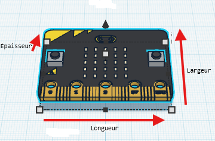 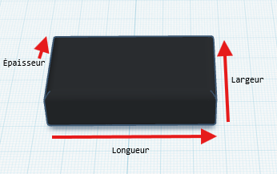
- Notez les dimensions dans un tableau, dans votre document
- Vous allez en suite commencer par modéliser la batterie, en fonction des mesures que vous venez de prendre
- N'hésitez pas à vous rapprochez le plus possible du design réel de votre batterie (coin arrondis...), pas besoin de modéliser les fils et le connecteur.
- Allez sur Tinkercad
- Créez une nouvelle conception 3D
- Modélisez la batterie
- Prendre un screen de votre travail et le mettre dans votre document avec comme légende: "Micro:bit : batterie"
- Pour la carte, vous pouvez la retrouver en cliquant sur "Formes simples" 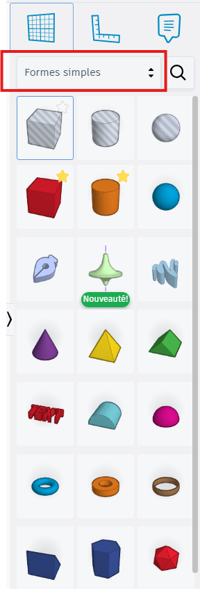
- Puis dans le menu "Électronique" 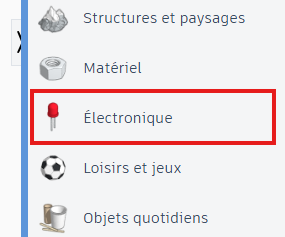
- Finalement, cliquez une fois sur le bouton "Plus de formes", vous retrouverez la carte micro:bit 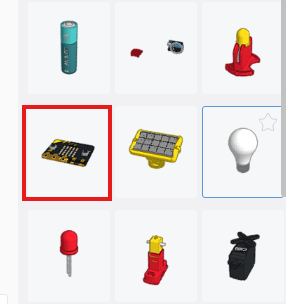
- Ajoutez votre carte micro:bit dans votre projet Tinkercad
- N'hésitez pas à regrouper votre carte avec votre batterie en appuyant sur le bouton "Regroupe en lot", ou en utilisant le raccourci Ctrl+B (une fois que vos 2 objets sont sélectionnés)
- Prendre un screen de votre travail et le mettre dans votre document avec comme légende: "Carte Micro:bit"
- Déposer votre document dans le dossier partagé de votre classe (CDC/Ma Classe/Espace d'échange/Techno)
Exemple de modélisation de la batterie (vous n’êtes pas obligé de faire exactement la même chose, faites en fonction de vos connaissances et de votre créativité, l’essentiel est que les dimensions soient respectées) :
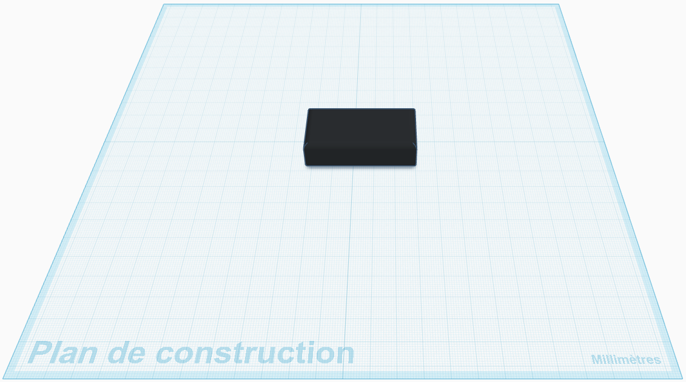
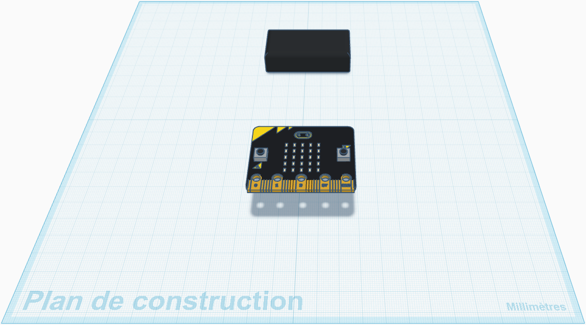
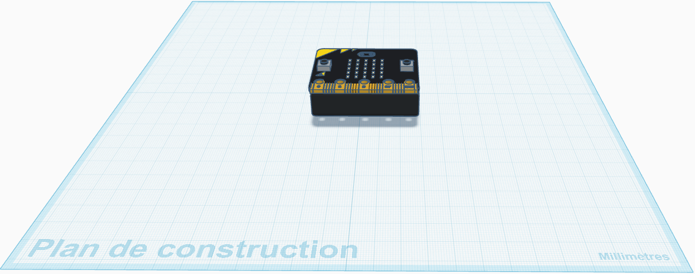
Écrire à la main
Sur une feuille, écrivez à la main, en quelques lignes, ce que vous avez fait aujourd’hui, et ce que vous avez appris.
Séance 30 : Modélisation du porte-clé en 3D : la base 1/2
Thème : Création, conception, réalisation, innovations technologiques
Compétence visée : Concevoir et représenter une solution technique (modélisation 3D)
Objectifs d’apprentissage-
Ce que les élèves vont apprendre (connaissances) :
- Une pièce 3D se construit à partir de formes simples (solides) qu’on dimensionne, positionne et assemble.
- En modélisation, on doit respecter des contraintes : dimensions, épaisseur, emboîtement, passage des câbles, stabilité.
- Un objet fabriqué (impression 3D) a besoin de règles simples : épaisseur minimale, trous, ajustements.
-
Ce qu’ils vont apprendre à faire (capacités) :
- Prendre des mesures précises pour modéliser un objet 3D.
- Noter les dimensions dans un document pour les retrouver facilement.
- Utiliser Tinkercad pour créer une pièce avec des cotes précises.
- Réaliser un assemblage simple (ajout / alignement / groupement).
Pourquoi ce cours
Vous avez apris à modéliser une forme en 3D, mais pour que votre objet puisse être fabriqué, il doit respecter des dimensions précises.
Aujourd’hui, vous allez commencer (ou reprendre) la modélisation de la base de votre porte-clé en intégrant les dimensions de la carte et de la batterie que vous avez prises lors de la séance précédente.
Let's GO !!!!!
- Créer un document LibreOffice Writer.
- Nommez le "5e_S30_nom1_nom2" (pas de prénom)
-
Ouvrez le document et y mettre OBLIGATOIREMENT les informations suivantes:
- Séance 30 : Modélisation du porte-clé en 3D : la base
- Nom et prénom des membres du groupe
- Seulement après avoir fait cela, vous pouvez continuer.
- Allez sur Tinkercad
- Créez une nouvelle conception 3D
- Choisissez un modèle qui vous plait, ou modélisez un nouveau modèle, en respectant les dimensions de la carte et de la batterie.
- Pour cette première séance, concentrez-vous sur la forme de base et le respect des dimensions, les ajustements se feront lors des séances suivantes.
- Faites en sorte que votre carte micro:bit ainsi que la batterie, rentres bien dans votre porte-clé.
- N'hésitez pas à zoomer de très prés afin de vérifier que votre carte et votre batterie rentrent bien dans votre porte-clé (si votre carte ou votre batterie sont dans la matière qui fait votre porte-clé, il faut faire des ajustements).
- Prendre un screen de votre travail et le mettre dans votre document avec comme légende: "Porte-clé 3D: Base 1/2"
- Déposer votre document dans le dossier partagé de votre classe (CDC/Ma Classe/Espace d'échange/Techno)
Exemple de modélisation de mon porte-clé (vous n’êtes pas obligé de faire exactement la même chose, faites en fonction de vos connaissances et de votre créativité, l’essentiel est que les dimensions soient respectées) :
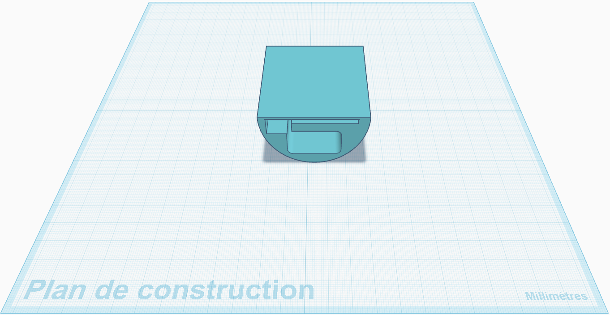
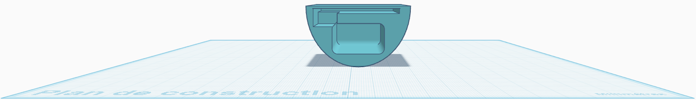
Écrire à la main
Sur une feuille, écrivez à la main, en quelques lignes, ce que vous avez fait aujourd’hui, et ce que vous avez appris.
Séance 31 : Modélisation du porte-clé en 3D : la base 2/2
Thème : Création, conception, réalisation, innovations technologiques
Compétence visée : Concevoir et représenter une solution technique (modélisation 3D)
Objectifs d’apprentissage-
Ce que les élèves vont apprendre (connaissances) :
- Une pièce 3D se construit à partir de formes simples (solides) qu’on dimensionne, positionne et assemble.
- En modélisation, on doit respecter des contraintes : dimensions, épaisseur, emboîtement, passage des câbles, stabilité.
- Un objet fabriqué (impression 3D) a besoin de règles simples : épaisseur minimale, trous, ajustements.
-
Ce qu’ils vont apprendre à faire (capacités) :
- Prendre des mesures précises pour modéliser un objet 3D.
- Noter les dimensions dans un document pour les retrouver facilement.
- Utiliser Tinkercad pour créer une pièce avec des cotes précises.
- Réaliser un assemblage simple (ajout / alignement / groupement).
Pourquoi ce cours
Vous avez apris à modéliser une forme en 3D, mais pour que votre objet puisse être fabriqué, il doit respecter des dimensions précises.
Aujourd’hui, vous allez continuer la modélisation de la base de votre porte-clé en intégrant les dimensions de la carte et de la batterie que vous avez prises lors de la séance précédente, en ajoutant des détails et en ajustant a la forme pour de votre carte (boutons et affichage LED).
Let's GO !!!!!
- Créer un document LibreOffice Writer.
- Nommez le "5e_S31_nom1_nom2" (pas de prénom)
-
Ouvrez le document et y mettre OBLIGATOIREMENT les informations suivantes:
- Séance 31 : Modélisation du porte-clé en 3D : la base 2/2
- Nom et prénom des membres du groupe
- Seulement après avoir fait cela, vous pouvez continuer.
- Il va falloir penser aux ajustements afin de rendre la carte utilisable dans votre porte-clé (boutons et affichage LED).
- Pour les boutons, vous pouvez faire des trous ou des encoches pour pouvoir appuyer dessus, ou faire en sorte que les boutons soient à l’extérieur du porte-clé, à vous de voir.
- Pour l’affichage LED, vous pouvez faire une découpe pour que les LEDs soient visibles, ou faire en sorte que les LEDs soient à l’extérieur du porte-clé, à vous de voir.
- Prendre un screen de votre travail et le mettre dans votre document avec comme légende: "Porte-clé 3D: Base 2/2"
- Déposer votre document dans le dossier partagé de votre classe (CDC/Ma Classe/Espace d'échange/Techno)
Exemple de modélisation de mon porte-clé (vous n’êtes pas obligé de faire exactement la même chose, faites en fonction de vos connaissances et de votre créativité, l’essentiel est que les dimensions soient respectées) :
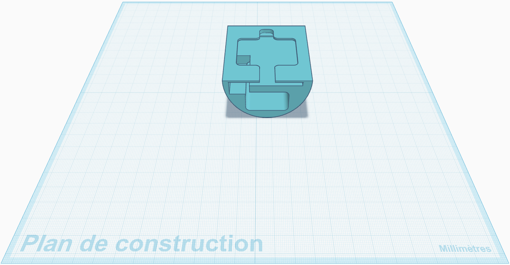
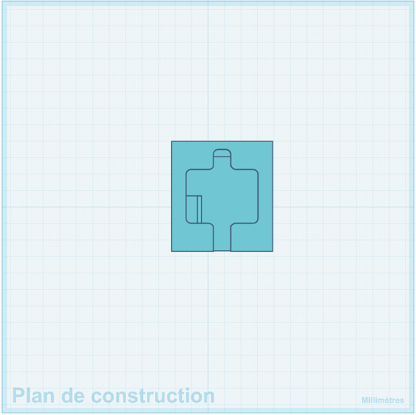
Écrire à la main
Sur une feuille, écrivez à la main, en quelques lignes, ce que vous avez fait aujourd’hui, et ce que vous avez appris.
Séance 32 : Modélisation du porte-clé en 3D : la base, derniers ajustements et détails
Thème : Création, conception, réalisation, innovations technologiques
Compétence visée : Concevoir et représenter une solution technique (modélisation 3D)
Objectifs d’apprentissage-
Ce que les élèves vont apprendre (connaissances) :
- Une pièce 3D se construit à partir de formes simples (solides) qu’on dimensionne, positionne et assemble.
- En modélisation, on doit respecter des contraintes : dimensions, épaisseur, emboîtement, passage des câbles, stabilité.
- Un objet fabriqué (impression 3D) a besoin de règles simples : épaisseur minimale, trous, ajustements.
-
Ce qu’ils vont apprendre à faire (capacités) :
- Prendre des mesures précises pour modéliser un objet 3D.
- Noter les dimensions dans un document pour les retrouver facilement.
- Utiliser Tinkercad pour créer une pièce avec des cotes précises.
- Réaliser un assemblage simple (ajout / alignement / groupement).
Pourquoi ce cours
Vous avez apris à modéliser une forme en 3D, mais pour que votre objet puisse être fabriqué, il doit respecter des dimensions précises.
Aujourd’hui, vous allez continuer la modélisation de la base de votre porte-clé en intégrant directement votre carte micro:bit et votre batterie. Il faut que les boutons soient bien accessible, que les LEDs soient visibles, que les câbles puissent passer, et que votre porte-clé soit solide.
Let's GO !!!!!
- Créer un document LibreOffice Writer.
- Nommez le "5e_S32_nom1_nom2" (pas de prénom)
-
Ouvrez le document et y mettre OBLIGATOIREMENT les informations suivantes:
- Séance 32 : Modélisation du porte-clé en 3D : la base, derniers ajustements et détails
- Nom et prénom des membres du groupe
- Seulement après avoir fait cela, vous pouvez continuer.
- Allez sur Tinkercad
- Créez une nouvelle conception 3D
- Copiez / collez votre base 3D de la séance précédente, dans la conception d'aujourd'hui.
- Copiez / collez votre carte micro:bit et votre batterie dans la conception d'aujourd'hui.
-
Assemblez tout et vérifiez:
- Que votre batterie ne dépasse pas les limites de la base, ne touche pas (ou très peu) les bords de la base.
- Qu'il y a suffisament de place sur le connecteur de la carte, pour y brancher la batterie.
- Que votre carte ne dépasse pas les limites de la base, ne touche pas (ou très peu) les bords de la base.
- Que les boutons de la carte micro:bit sont accessibles, utilisable.
- Que les LEDs sont visibles
- Si votre design le permet, que le port USB est accessible et que l'on peut y brancher le câble.
- Prendre un screen de votre travail et le mettre dans votre document avec comme légende: "Porte-clé 3D: assemblage"
- Déposer votre document dans le dossier partagé de votre classe (CDC/Ma Classe/Espace d'échange/Techno)
Exemple de modélisation de mon porte-clé (vous n’êtes pas obligé de faire exactement la même chose, faites en fonction de vos connaissances et de votre créativité, l’essentiel est que les dimensions soient respectées) :
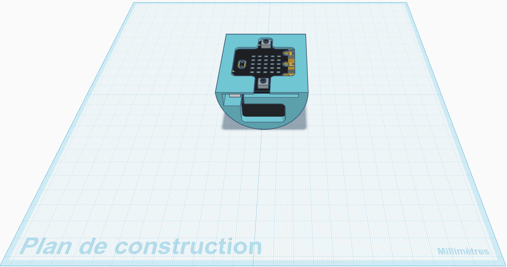
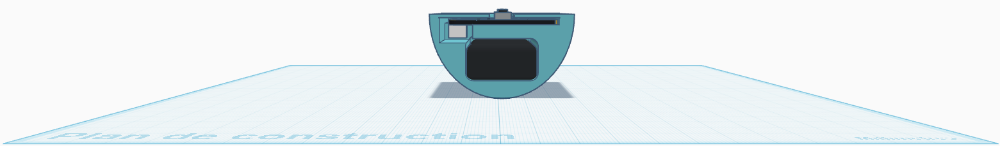
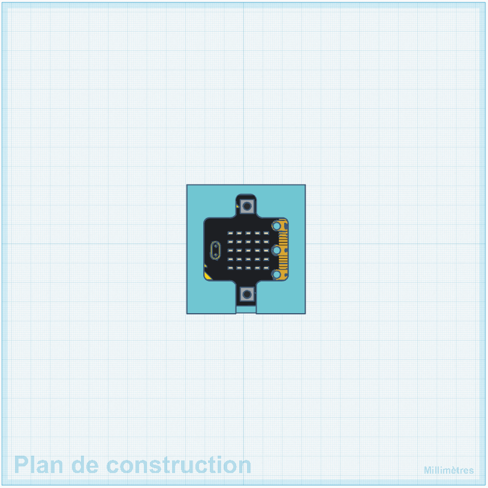
Écrire à la main
Sur une feuille, écrivez à la main, en quelques lignes, ce que vous avez fait aujourd’hui, et ce que vous avez appris.
Séance 33 : Les différents types de liaisons mécaniques
Thème : Création, conception, réalisation, innovations technologiques
Compétence visée : Identifier et caractériser des solutions techniques (liaisons mécaniques)
Objectifs d’apprentissage-
Ce que les élèves vont apprendre (connaissances) :
- Ce qu’est une liaison mécanique.
-
La différence entre :
- liaison fixe (aucun mouvement),
- liaison pivot (rotation),
- liaison glissière (translation),
- liaison pivot glissant (rotation + translation).
- Que les liaisons déterminent les mouvements autorisés entre deux pièces.
-
Ce qu’ils vont apprendre à faire (capacités) :
- Identifier une liaison mécanique dans un objet réel.
- Associer un type de liaison à un mouvement.
- Réaliser un tableau comparatif clair.
- Produire un document structuré avec images annotées.
Pourquoi ce cours
Pour concevoir un objet solide et fonctionnel, il faut comprendre comment les pièces sont assemblées entre elles.
Les liaisons mécaniques permettent de relier des pièces et déterminent leurs mouvements possibles.
-
Sans liaisons mécaniques:
- un vélo ne tiendrait pas debout
- une porte ne pourrait pas pivoter
- un rail ne pourrait pas coulisser
- ...
Introduction et explication
Une liaison mécanique est un système qui relie deux pièces ensemble.
Elle peut être de différents types, selon les mouvements qu’elle autorise entre les pièces :
- Une liaison fixe ne permet aucun mouvement entre les pièces (ex: collage, soudure). 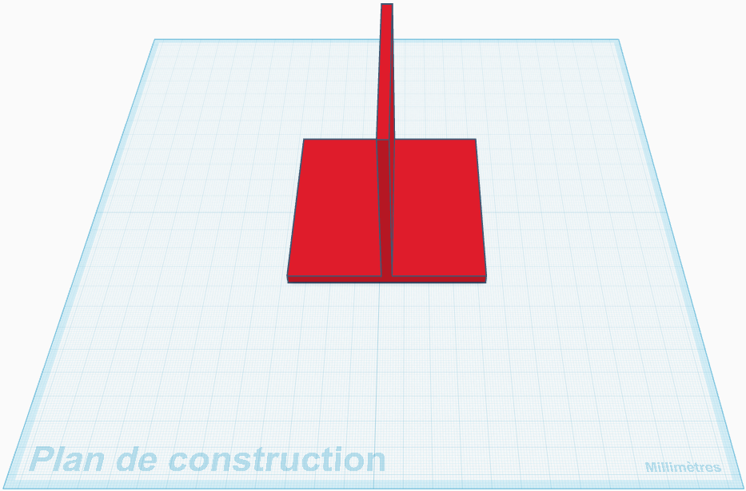
- Une liaison pivot permet une rotation autour d’un axe (ex: charnière d’une porte). 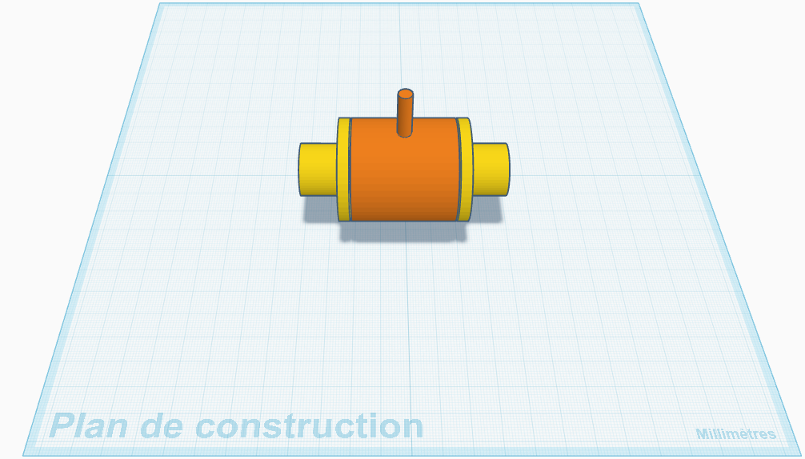
- Une liaison glissière permet une translation le long d’un axe (ex: tiroir). 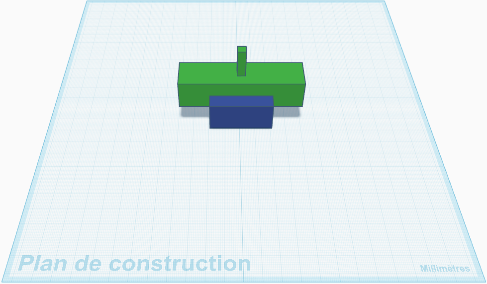
- Une liaison pivot glissant permet à la fois une rotation et une translation (ex: une tige de selle de vélo). 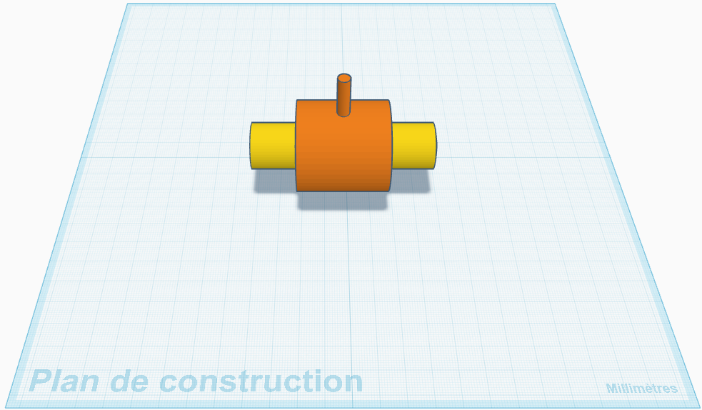
| Type de liaison | Mouvement autorisé | Exemple concret |
| Fixe | Aucun mouvement | Cadre d’un vélo |
| Pivot | Rotation | Porte / roue |
| Glissière | Translation | Tiroir |
| Pivot glissant | Rotation + translation | Tige de selle de vélo |
Création du document
- Créer un document LibreOffice Writer.
- Nommez le "5e_S33_nom1_nom2" (pas de prénom)
-
Ouvrez le document et y mettre OBLIGATOIREMENT les informations suivantes:
- Séance 33 : Les différents types de liaisons mécaniques
- Nom et prénom des membres du groupe
- Seulement après avoir fait cela, vous pouvez continuer.
Recherche sur ordinateur
Trouvez des exemples d’objets du quotidien qui utilisent ces différents types de liaisons mécaniques, et collez une image, puis annotez la pour chaque exemple.
Par exemple, pour la liaison pivot, vous pouvez trouver une porte, et annoter l’image en indiquant où se trouve la charnière (liaison pivot) et comment elle permet à la porte de pivoter.
Création du tableau comparatif
Copier / Coller le tableau suivant dans votre document, puis remplissez le:
| Type de liaison | Mouvement possible | Exemple réel | Schéma simple (facultatif) |
À copier à la main
Une liaison mécanique relie deux pièces d’un objet technique et définit leurs mouvements possibles.
Il existe plusieurs types de liaisons : fixe (aucun mouvement), pivot (rotation), glissière (translation) et pivot glissant (rotation et translation).
Les liaisons permettent aux objets techniques de fonctionner correctement.
Séance 34 : Modélisation des différents types de liaisons mécaniques
Thème : Création, conception, réalisation, innovations technologiques
Compétence visée : Identifier et caractériser des solutions techniques (liaisons mécaniques)
Objectifs d’apprentissage-
Ce que les élèves vont apprendre (connaissances) :
- Ce qu’est une liaison mécanique.
-
La différence entre :
- liaison fixe (aucun mouvement),
- liaison pivot (rotation),
- liaison glissière (translation),
- liaison pivot glissant (rotation + translation).
- Que les liaisons déterminent les mouvements autorisés entre deux pièces.
-
Ce qu’ils vont apprendre à faire (capacités) :
- Identifier une liaison mécanique dans un objet réel.
- Associer un type de liaison à un mouvement.
- Réaliser un tableau comparatif clair.
- Produire un document structuré avec images annotées.
Pourquoi ce cours
Pour concevoir un objet solide et fonctionnel, il faut comprendre comment les pièces sont assemblées entre elles.
Aujourd’hui, vous allez modéliser les différents types de liaisons mécaniques que vous avez vu lors de la séance précédente, en utilisant Tinkercad. Vous allez créer une nouvelle conception 3D pour chaque type de liaison, et modéliser un exemple simple de chaque type de liaison.
Let's GO !!!!!
- Créer un document LibreOffice Writer.
- Nommez le "5e_S34_nom1_nom2" (pas de prénom)
-
Ouvrez le document et y mettre OBLIGATOIREMENT les informations suivantes:
- Séance 34 : Modélisation des différents types de liaisons mécaniques
- Nom et prénom des membres du groupe
- Seulement après avoir fait cela, vous pouvez continuer.
- Allez sur Tinkercad
- Créez une nouvelle conception pour chaque type de liaison mécanique (fixe, pivot, glissière, pivot glissant)
- Prendre un screen de votre travail a la fin de chaque conception et le mettre dans votre document avec comme légende: "liaison [type de liaison]"
- Déposer votre document dans le dossier partagé de votre classe (CDC/Ma Classe/Espace d'échange/Techno)
Écrire à la main
Sur une feuille, écrivez à la main, en quelques lignes, ce que vous avez fait aujourd’hui, et ce que vous avez appris.
Séance 35 : Modélisation du porte-clé en 3D : créer un moyen de fermer le porte-clé
Thème : Création, conception, réalisation, innovations technologiques
Compétence visée : Concevoir et représenter une solution technique (modélisation 3D)
Objectifs d’apprentissage-
Ce que les élèves vont apprendre (connaissances) :
- Une pièce 3D se construit à partir de formes simples (solides) qu’on dimensionne, positionne et assemble.
- En modélisation, on doit respecter des contraintes : dimensions, épaisseur, emboîtement, passage des câbles, stabilité.
- Un objet fabriqué (impression 3D) a besoin de règles simples : épaisseur minimale, trous, ajustements.
-
Ce qu’ils vont apprendre à faire (capacités) :
- Prendre des mesures précises pour modéliser un objet 3D.
- Noter les dimensions dans un document pour les retrouver facilement.
- Utiliser Tinkercad pour créer une pièce avec des cotes précises.
- Réaliser un assemblage simple (ajout / alignement / groupement).
Pourquoi ce cours
Vous avez apris à modéliser une forme en 3D, mais pour que votre objet puisse être fabriqué, il doit respecter des dimensions précises.
Aujourd’hui, vous allez trouver un moyen de fermer votre porte-clé pour que votre carte micro:bit et votre batterie soient bien maintenues à l’intérieur de votre porte-clé, tout en respectant les contraintes de dimensions, d’accès aux boutons et aux LEDs, et de solidité. Vous allez en suite le créer en 3D et l’ajouter à votre porte-clé. Vous pouvez faire un système de fermeture simple (ex: un couvercle qui se clipse, ou un système de vis), ou un système plus complexe (ex: un système de charnière, ou un système de glissière), à vous de voir.
Let's GO !!!!!
- Créer un document LibreOffice Writer.
- Nommez le "5e_S35_nom1_nom2" (pas de prénom)
-
Ouvrez le document et y mettre OBLIGATOIREMENT les informations suivantes:
- Séance 35 : Modélisation du porte-clé en 3D : créer un moyen de fermer le porte-clé
- Nom et prénom des membres du groupe
- Seulement après avoir fait cela, vous pouvez continuer.
- Allez sur Tinkercad
- Dupliquez votre conception 3D de l'avant dernière séance (avant l'assemblage)
- Il va falloir trouver un moyen de fermer le porte clé.
-
Plusieurs choix s'offrent à vous :
- un couvercle qui se clipse
- un couvercle qui se glisse dans une fente
- un système de vis
- un système avec un loquet
- un cache qui pivote
- Prendre un screen de votre travail et le mettre dans votre document avec comme légende: "Porte-clé 3D: assemblage"
- Déposer votre document dans le dossier partagé de votre classe (CDC/Ma Classe/Espace d'échange/Techno)
Exemple de modélisation de mon porte-clé (vous n’êtes pas obligé de faire exactement la même chose, faites en fonction de vos connaissances et de votre créativité, l’essentiel est que les dimensions soient respectées) :
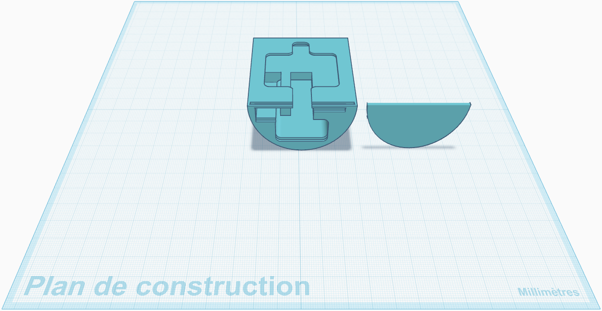
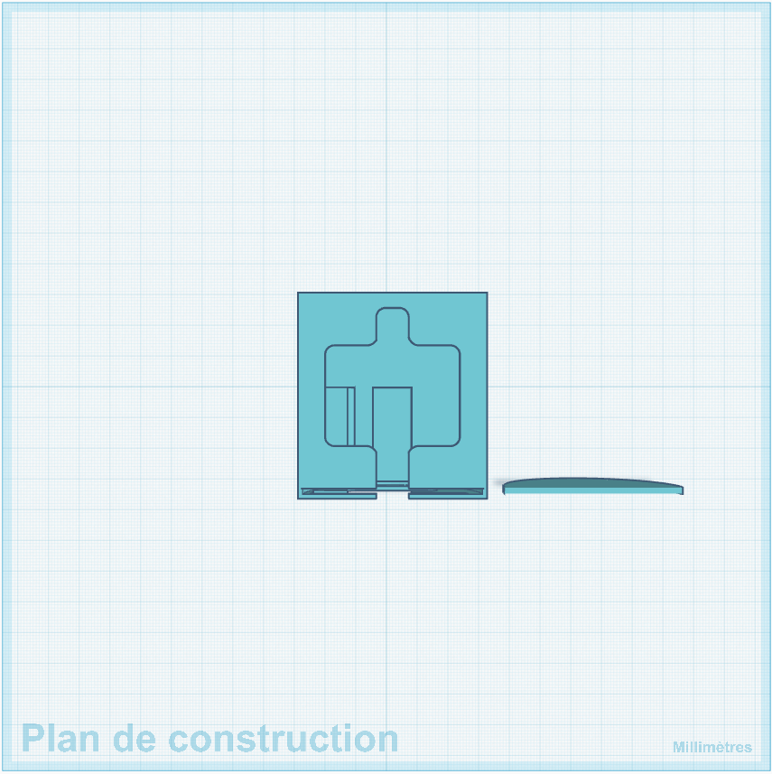
Écrire à la main
Sur une feuille, écrivez à la main, en quelques lignes, ce que vous avez fait aujourd’hui, et ce que vous avez appris.
Séance 36 : Modélisation du porte-clé en 3D : dernières corrections et préparation à l’impression
Thème : Création, conception, réalisation, innovations technologiques
Compétence visée : Concevoir et représenter une solution technique (modélisation 3D)
Objectifs d’apprentissage-
Ce que les élèves vont apprendre (connaissances) :
- Une pièce 3D se construit à partir de formes simples (solides) qu’on dimensionne, positionne et assemble.
- En modélisation, on doit respecter des contraintes : dimensions, épaisseur, emboîtement, passage des câbles, stabilité.
- Un objet fabriqué (impression 3D) a besoin de règles simples : épaisseur minimale, trous, ajustements.
-
Ce qu’ils vont apprendre à faire (capacités) :
- Prendre des mesures précises pour modéliser un objet 3D.
- Noter les dimensions dans un document pour les retrouver facilement.
- Utiliser Tinkercad pour créer une pièce avec des cotes précises.
- Réaliser un assemblage simple (ajout / alignement / groupement).
Pourquoi ce cours
Vous avez apris à modéliser une forme en 3D, mais pour que votre objet puisse être fabriqué, il doit respecter des dimensions précises.
Aujourd’hui, vous allez finaliser et préparer votre porte-clé pour l’impression 3D. Vous allez vérifier que votre porte-clé respecte les contraintes de fabrication (dimensions, épaisseur, trous, ajustements), et vous allez faire les derniers ajustements pour que votre porte-clé soit prêt à être imprimé en 3D.
Let's GO !!!!!
- Créer un document LibreOffice Writer.
- Nommez le "5e_S36_nom1_nom2" (pas de prénom)
-
Ouvrez le document et y mettre OBLIGATOIREMENT les informations suivantes:
- Séance 36 : Modélisation du porte-clé en 3D : dernières corrections et préparation à l’impression
- Nom et prénom des membres du groupe
- Seulement après avoir fait cela, vous pouvez continuer.
- Allez sur Tinkercad
- Reprenez votre porte-clé 3D de la séance précédente
- Vérifiez que tout respecte les contraintes de fabrication (dimensions, épaisseur, trous, ajustements)
- Finissez chaques détails, chaque éléments, ajoutez les derniers ajustements nécessaires
- Prendre un screen de votre travail et le mettre dans votre document avec comme légende: "Porte-clé 3D: rendu final"
- Vous allez exporter votre porte-clé 3D au format STL
- Dans le menu tout en haut à droite, cliquez sur "Exporter" puis choississez ".STL"
- Enregistrer le fichier avec le nom "5e_S35_nom1_nom2_porte-cle_3D.stl"
- Déposer vos 2 documents dans le dossier partagé de votre classe (CDC/Ma Classe/Espace d'échange/Techno)
Écrire à la main
Sur une feuille, écrivez à la main, en quelques lignes, ce que vous avez fait aujourd’hui, et ce que vous avez appris.